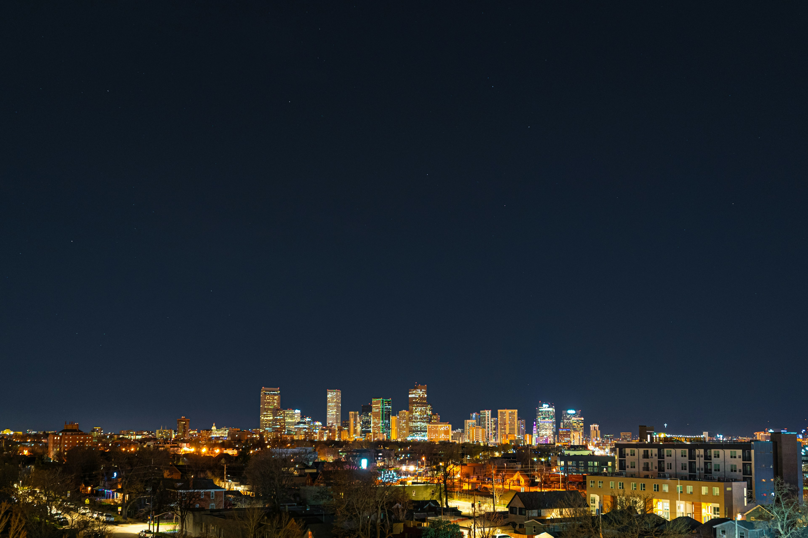

Most Popular Denver Airport Routes
Denver International Airport (DIA) serves as the gateway to Colorado's incredible destinations. Whether you're heading to world-class ski resorts, vibrant downtown Denver, or scenic mountain towns, understanding the most popular routes can help you plan your journey better.
Top 5 Routes from Denver Airport
1. DIA to Downtown Denver
Distance: 25 miles | Average Time: 30-45 minutes
The most frequently traveled route, connecting the airport to Denver's business district, hotels, and entertainment venues. This route takes you along Peña Boulevard and I-70, offering a smooth journey into the heart of the Mile High City. Our luxury sedans and SUVs are perfect for this route, providing comfort and style for both business and leisure travelers.
2. DIA to Vail Ski Resort
Distance: 120 miles | Average Time: 2-3 hours
One of the most popular ski resort destinations, Vail attracts visitors year-round. The scenic drive along I-70 West takes you through beautiful mountain terrain. Winter conditions can be challenging, which is why our professional drivers' expertise becomes invaluable. We recommend our Mercedes Sprinter vans for groups with ski equipment.
3. DIA to Boulder
Distance: 45 miles | Average Time: 45-60 minutes
Boulder's vibrant college town atmosphere and outdoor recreation opportunities make it a frequent destination. The route via E-470 and US-36 offers stunning views of the Flatirons. Many of our clients choose this route for university visits, conferences, and outdoor adventures.
4. DIA to Breckenridge
Distance: 95 miles | Average Time: 1.5-2.5 hours
Another premier ski destination, Breckenridge is accessible via I-70 West. This historic mining town turned world-class resort sees heavy traffic during ski season. Our drivers know the best times to travel and alternative routes to avoid congestion, ensuring you arrive relaxed and on time.
5. DIA to Colorado Springs
Distance: 85 miles | Average Time: 1.5-2 hours
Colorado Springs, home to Garden of the Gods and Pike's Peak, is a popular destination for both tourists and military personnel visiting bases in the area. The I-70 to I-25 South route offers relatively easy driving conditions year-round.
Seasonal Route Considerations
Winter (December-March): Mountain routes require extra caution and time. Our vehicles are equipped with proper tires and safety equipment, and our drivers are experienced in winter driving conditions.
Summer (June-August): Peak tourist season means increased traffic, especially on weekends. Red Rocks concert season also creates unique transportation demands.
Fall/Spring: Generally the best weather for travel, though mountain passes can still see sudden weather changes.
Why Choose Professional Transportation
Navigating these routes, especially during peak times or challenging weather, can be stressful. Here's why our clients choose professional transportation:
- Local Knowledge: Our drivers know alternative routes, traffic patterns, and seasonal challenges
- Safety: Professional drivers trained in mountain and winter driving
- Convenience: No parking hassles, no navigation stress
- Comfort: Relax and enjoy the scenic views while we handle the driving
- Reliability: Flight tracking and real-time traffic monitoring ensure on-time service
Book Your Route Today
Whether you're heading to the slopes, downtown, or anywhere in Colorado, we're here to make your journey smooth and stress-free. Our fleet of luxury vehicles can accommodate individuals, families, and large groups.
Contact us at 720.579.6135 or book online to reserve your transportation today.